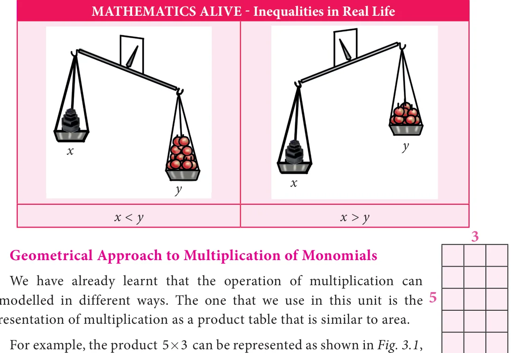

Chapter
ALGEBRA
3
Learning Objectives
●● To understand the following identities through geometrical proof
(x \(+a)(x +b)= x +\) x(a +b)+ab
(a \(+b) =a +2ab+b\)
(a - b) \(=a - 2ab+b\) and
(a \(+b)(a - b)=a - b\) . ●● Able to apply the identities in numerical problems. ●● Able to recognise expressions that are factorisable. ●● To represent inequalities in one variable, graphically.
3.1 Introduction to Identities
In earlier classes, we have learnt to construct algebraic expressions using exponential
notations. For example, x +3x +2 is an algebraic expression in the variable x. This can
also be written as an equation \(x +3x = - 2\) . By substituting numerical values for x, we can verify this equation.
If \(x = - 2\) , then L.H.S \(= x +3x =\) ( \(- 2) +3( - 2)\)
\(= 4 - 6 = - =2\) R.H.S
Hence, this equation is true when \(x = - 2\).
If \(x = - 1\), then L.H.S \(= x +3x =( - 1) +3( - 1) =1 - 3 = - =2\) R.H.S
Hence, this equation is true when \(x = - 1\).
But when \(x =1\), L.H.S \(= x +3x =(1) +3 1(\) )
\(=1+3 = 4 \ne\) R.H.S
Thus, this equation is not true when \(x =1\).
Thus, \(x + 3x = - 2\) is an equation which is true only when x takes the values \(- 1\) and \(- 2\). Hence, an equation is true only for certain values of the variable in it.
It is not true for all values of the variables.
Now, consider the algebraic expression, (a \(+b) = a +2ab+b\) . Let us try to find the values of the expression for the given values of a and b.
L.H.S = (a \(+b) =(3+ =5) =8 = =8 \times 8=64\)
For example, when a 3 and b 5,
R.H.S \(=a +2ab+b =3 +(2 \times 3 \times 5)+5 =9+30+25= 64\)
L.H.S \(=(a +b) = =(4+7) = =11 =121\)
Thus, for \(a = 3\) and \(b = 5\) , L.H.S = R.H.S Similarly, when a 4 and b 7,
R.H.S \(=a +2ab+b = 4 +2 \times 4 \times 7+7 =16+56+49=121\)
Also, for \(a = 4\) and \(b = 7\) , L.H.S = R.H.S Thus, we shall find that for any value of ‘a’ and ‘b’ L.H.S = R.H.S. Such an equality, which is true for every value of the variable in it is called an identity. Thus, we observe that
the equation (a \(+b) =a +2ab+b\) is an identity.
In general, algebraic equalities which hold true for all the values of the variables are called Identities. Let us see the basic identities with geometrical proof.
